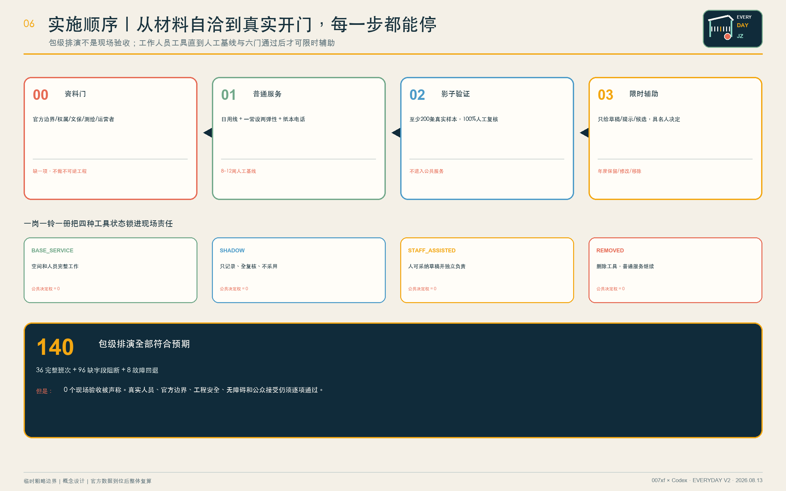

POST
一岗：具名人判断、签字并决定复开
城市先好用，AI 再上场。先修通一条日用线，再开一间常设与两间弹性房；AI 只进入工作人员后场。
没有具名值守、实体求助和交接证据，工作人员工具不开班；所有公共决定始终由人作出。
一岗：具名人判断、签字并决定复开
一铃：纸本、电话或人工台，无需 App/登录/人脸
一册：开班、停用、报修、交接和复开可审计
总览地图 · 三层范围 · 重点区域 · 用地分区 · 交通慢行 · 蓝绿公共空间 · 建筑 · 更新项目 · AI 场景。
核心指标 · 任务覆盖 · 自检状态 · 来源 · 假设。全部数值以 metrics.json 与 GeoJSON 为准。

AI 原点公共长桌为首选，最终服从运营者、权属、消防、无障碍与官方边界。
众智园修理花园与大钟寺日夜客厅只在场地、人员、安全、维护和 OPEX 到位时开放。
24 + 8 + 8 小时开放，再加 20% 交接、培训和替班；不是批准班表、工资或 OPEX。
36 份完整班次可进入真实人员排练；96 份缺字段即阻断；8 份故障回退。140/140 符合预期，但 0 个现场通过被声称。


